MoonLake
A native client for your media server.

MoonLake brings SABnzbd, Sonarr, Radarr, Tautulli, Prowlarr and Bazarr, plus your Newznab indexers such as NZBGeek and nzb.life, together in one app for iPhone, iPad, Mac and the foldable iPhone Duo. It talks directly to your own servers, at home or away, with no account, no cloud and no tracking.
MoonLake is inspired by LunaSea, rebuilt from scratch as a native app.
SABnzbdSonarrRadarrTautulliProwlarrBazarrNewznab indexersMultiple instancesHome & Away addressesiPhone DuoWidgetApple WatchDemo Mode
Getting started
- Open Settings in the sidebar. Each service has its own section.
- Tap the service to set up, or Add Sonarr, Add Radarr and so on.
- Give it a Name if you like. Leave it blank to use the service's name.
- Enter its addresses (see Home & Away).
192.168.1.10:8989works; MoonLake addshttp://for you. Addresses with a path, such ashttps://example.com/sonarr, are fine for reverse proxies. - Enter the API Key. Each service's settings say where to find it, for example Settings → General → Security → API Key in Sonarr and Radarr.
- Tap Test Connection. MoonLake checks each address and shows the service's version, or a clear reason it couldn't connect, such as a timeout, the wrong key, an untrusted certificate, or Radarr entered where Sonarr should be. A successful test turns on Show in Sidebar.
API keys and passwords are stored in the Keychain on your device.
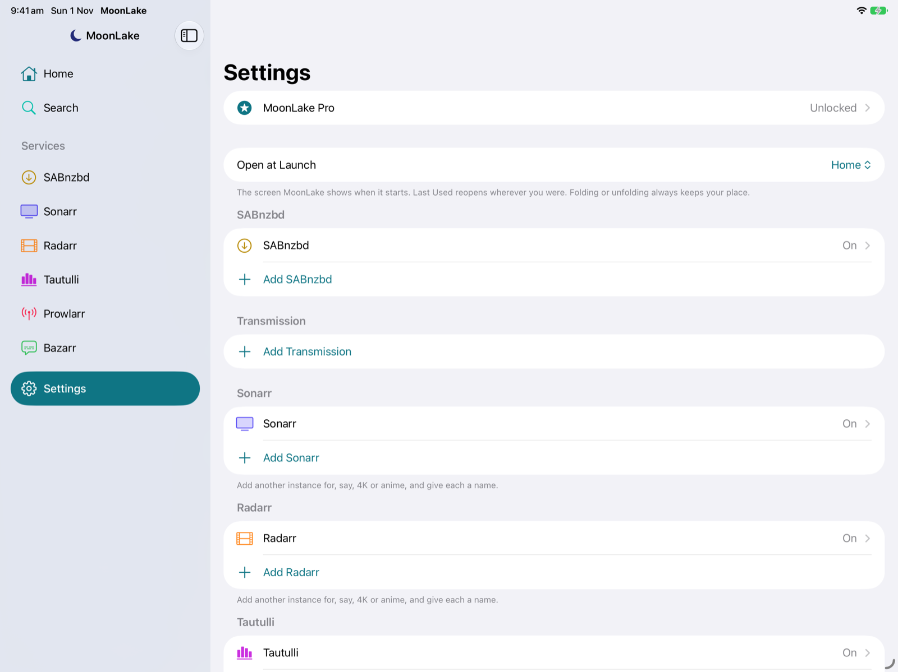
iCloud Backup
Each of your devices backs up its own MoonLake settings to iCloud: servers and preferences to your iCloud storage, and API keys and passwords to iCloud Keychain (end-to-end encrypted). Because every device has its own backup, setting up a new or erased device never replaces the backup of the one you've been using.
- New device: the first time MoonLake opens on an iPhone, iPad or Mac with nothing set up, it offers the most complete backup from your other devices, or lets you choose a different one.
- Restore from iCloud: Settings → iCloud Backup → Restore from iCloud lists every device's backup with its name, number of servers and date. Tap one to restore it to the device you're using; swipe to delete one you no longer need, such as a phone you've sold.
- Backup Name: iPhones and iPads are called "iPhone" and "iPad" to begin with; give each a name, such as "Work iPhone", to tell them apart.
- Turning it off on a device deletes just that device's backup; your other devices' backups stay. Settings reminds you it's off.
- If iCloud Keychain is off, everything but the API keys is restored, and MoonLake tells you which to enter again.
Clear Image Cache
MoonLake keeps posters and artwork so they appear instantly, up to 256 MB; the oldest go first beyond that, and iOS can clear them when space runs low. Settings → Clear Image Cache shows how much they take and clears them at once. Nothing is lost: they download again when needed.
Erase All Settings
Settings → Erase All Settings removes every server, API key and preference from the device you're using, so MoonLake starts over as if just downloaded. It asks first. Only that device is affected: your other devices, your iCloud Backup and your servers themselves aren't touched, and MoonLake Pro stays unlocked. To bring your settings back, use Restore from iCloud.
Open at Launch
Settings → Open at Launch picks the screen MoonLake opens on: Home (the default), Search, any service in the sidebar, or Last Used to reopen wherever you were.
Multiple instances
With MoonLake Pro you can add as many instances of any service as you run (the free version has one of each), for example Sonarr and Sonarr 4K, Radarr Anime, two SABnzbd servers, or Tautulli for two Plex servers.
- Add: Settings → Add Sonarr (or any service). New instances are numbered until you name them.
- Rename: open the instance in Settings and change Name.
- Delete: swipe left on the instance in Settings, or touch and hold it. MoonLake forgets its addresses and key; nothing changes on the server.
- Each enabled instance gets its own row in the sidebar, under its name.
- Home combines every Sonarr and Radarr instance. With more than one, each row shows a small tag naming its instance.
- Indexers work the same way: add NZBGeek and nzb.life as separate indexers and search them together.
Home & Away addresses
Each server has two addresses:
| Home | The address on your home network, e.g. http://192.168.1.10:8989. MoonLake tries this first, so it's fast at home. |
|---|---|
| Away | An address that works from anywhere, through a reverse proxy or a port forwarded on your modem, e.g. https://sonarr.example.com. Used when Home can't be reached. |
MoonLake remembers whichever address worked, and checks Home again whenever your network changes, for example when you get home and join Wi-Fi. Fill in just one if that's all you need. Indexers have a single API URL, since they're always on the internet.
Over plain http://, API keys travel unencrypted. For an Away address, use https:// through a reverse proxy if you can; MoonLake warns when an Away address is plain HTTP.
Getting around
- Sidebar: Home, Search (once an indexer is set up), each enabled service instance, and Settings. On a narrow screen it's the first screen; tap back to return to it.
- Tabs: services with several views (Queue / History, Library / Calendar / Queue, Activity / Users / History / Stats) switch with the control at the top. MoonLake remembers the tab you used.
- Settings gear: the ⚙︎ on any service screen opens that instance's settings.
- Open Web Interface: in each service's ⋯ menu (the 🌐 button on Tautulli), opens the service's own web page in your browser, at whichever address is working, for anything MoonLake doesn't do itself.
- Pull down to refresh any list. Busy lists (queues, activity) also refresh themselves while they're on screen.
- Notices: after an action, a short message at the bottom confirms it, e.g. "Searching for The Show", or explains what went wrong.
Home
Home shows this week's episodes and movies from all your Sonarr and Radarr instances, day by day, as LunaSea's dashboard did.
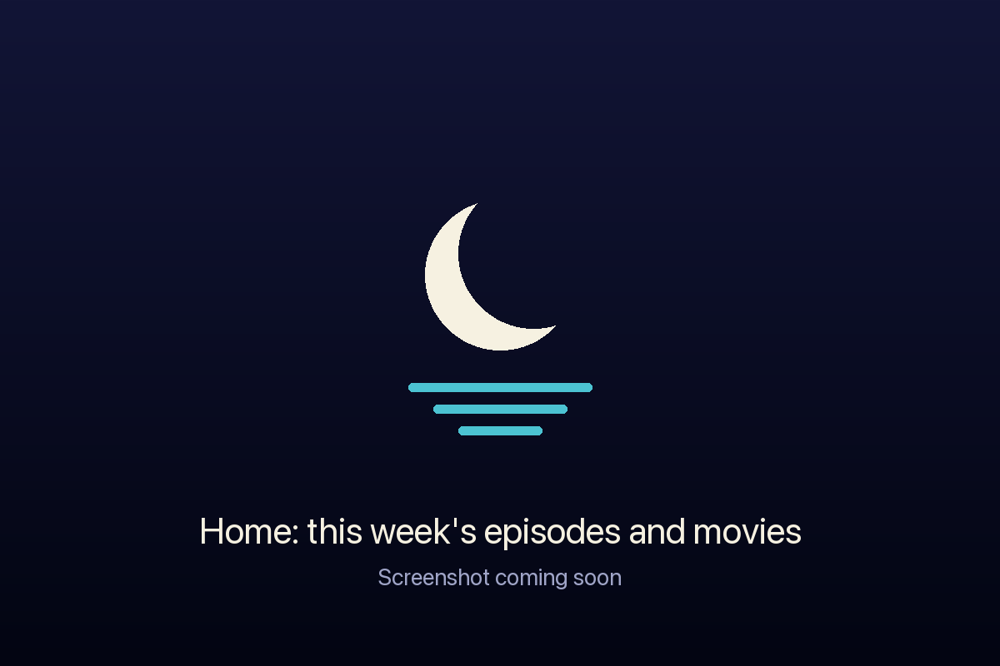
- Week strip: ‹ › change week and Today jumps back. Dots under each day show what's on: indigo for episodes, orange for movies. Tap a day to jump to it.
- Rows: episodes by air time, then cinema, digital and physical movie releases. Each row has the show's or movie's artwork faded behind it.
- Swipe right on a row for Interactive or Automatic search. A full swipe opens interactive search.
- Tap a row to open the series or movie.
- Items already downloading show a progress ring; items waiting to import show a tray.
SABnzbd
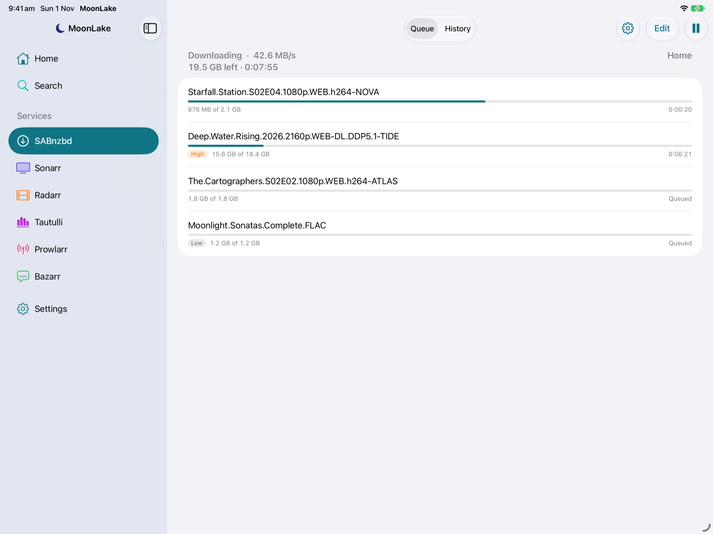
Queue
- The header shows Downloading / Paused / Idle, the speed, size and time left, and whether you're on the Home or Away address. It refreshes every 2 seconds.
- The toolbar button pauses or resumes the whole queue.
- Swipe right on a job: Pause or Resume.
- Swipe left: Delete, after a confirmation. This also removes whatever it downloaded so far.
- Touch and hold for Move to Top, Move to Bottom, a Priority menu (Force, High, Normal, Low), and Delete. Non-normal priorities show a badge.
- Reorder: touch and hold a job and drag it, or tap Edit for drag handles. SABnzbd always downloads higher priorities first, so raise a job's priority to make it finish sooner than lower-priority jobs.
The ⋯ menu
- Add NZB: paste a link (SABnzbd fetches it), or choose an
.nzbfile from Files, with a category and priority. - Sort Queue: by age, name or size, either way. SABnzbd sorts the queue once; new jobs join the end.
- Clear History: completed jobs, failed jobs (and their leftover files), or everything, after a confirmation. Downloaded files are never touched.
- When the Queue Finishes: nothing, shut down SABnzbd, or sleep, hibernate or shut down the computer it runs on.
- Status & Statistics: how much you've downloaded today, this week, this month and ever, in total and per news server; free space in the download and complete folders; speed limit, load and warnings.
History
- The last 50 jobs: ✅ completed, ❌ failed (with SABnzbd's reason), ⚙︎ still being processed.
- Search your whole history by name.
- Swipe left: Remove from history. For a failed job this also deletes its leftover files; completed downloads are never touched.
Sonarr
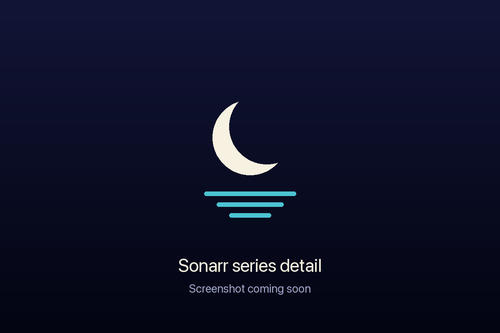
Library
- Searchable, with posters and "45 of 50 episodes". Unmonitored series have greyed-out, faded posters.
- View Options (the filter icon): show the library as a List or a poster Grid; show All, Monitored, Unmonitored, Missing Episodes, Continuing or Ended; sort by Title, Year, Recently Added, Recently Aired, Next Airing or Size on Disk; and pick a single Year. MoonLake remembers your choice. In the grid, touch and hold a poster for the swipe actions.
- Swipe right: Automatic Search for the series.
- Swipe left: Monitor or Unmonitor.
Series
- Poster, network, status, size, next airing and overview, and IMDb and TheTVDB links.
- A Monitored switch and Automatic Search: Monitored Episodes.
- The ⋯ next to each season: Interactive Search (season packs included), Automatic Search, and Monitor / Unmonitor the season.
- Episodes: swipe right for Interactive or Automatic search, swipe left to Monitor or Unmonitor.
| Icon | Means |
|---|---|
| ✅ green tick | Downloaded |
| Teal progress ring | Downloading now (orange if there's a problem) |
| Tray | Downloaded, waiting to import |
| ❗ red | Missing: aired and monitored, but not downloaded |
| 🕘 clock | Not aired yet |
| Crossed-out bookmark | Unmonitored |
Calendar and Queue
- Calendar: yesterday to two weeks ahead, by day. Swipe right to search; tap to open the series.
- Queue: progress, import stage and any warning, e.g. "No files found are eligible for import". Swipe left: Remove or Remove and Blocklist, which also removes it from the download client.
- ＋ Add Series: search TheTVDB by title, then choose the root folder, quality profile, what to monitor (all, future, missing, first or latest season…), series type and season folders, and whether to search for missing episodes straight away. Series you already have are marked In Library.
- ⋯ menu: Search All Missing Episodes (asks first), Refresh All Series (updates every series' details and rescans its files), Run RSS Sync (checks your indexers for new releases now rather than at the next scheduled sync), Back Up Database (saved alongside Sonarr's scheduled backups) and Open Web Interface.
Radarr
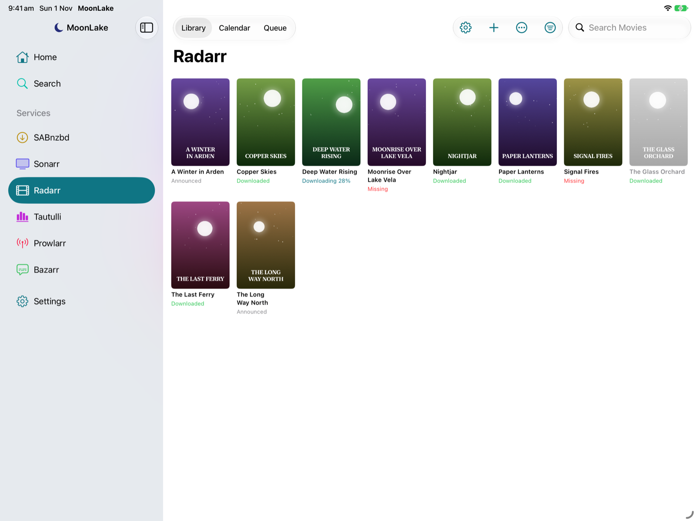
- View Options: List or poster Grid; show All, Monitored, Unmonitored, Missing, Downloaded or Not Available Yet; sort by Title, Year, Recently Added, Release Date or Size on Disk; filter by Year.
- Library: searchable, with each movie's status: Downloaded, Missing, In Cinemas, Announced, or "Downloading 45%" while in the queue. Unmonitored movies are dimmed. Swipe right for Interactive or Automatic search, swipe left to Monitor or Unmonitor.
- Movie: poster, runtime, overview, Monitored switch, Interactive Search, Automatic Search, release dates, file quality and size, and IMDb and The Movie Database links.
- ＋ Add Movie: search TMDB by title, then choose the root folder, quality profile, minimum availability and whether to search straight away.
- Calendar: cinema, digital and physical releases from a week ago to two months ahead.
- Queue and the ⋯ menu work as in Sonarr.
Interactive search
Interactive search lists every release your indexers found for an episode, season or movie, so you choose exactly what to download, like the 👤 button in Sonarr's and Radarr's web interfaces.
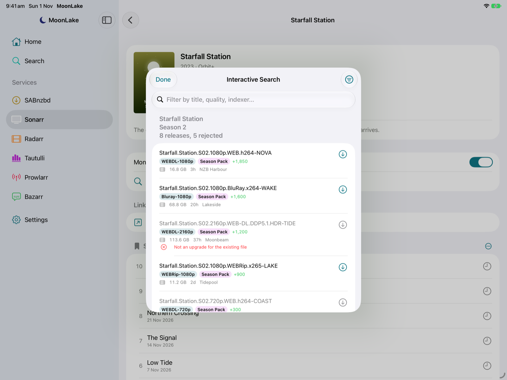
- Releases are in Sonarr's or Radarr's own order, best match first, with quality, season-pack badge, custom format score, size, age, seeders and indexer.
- Rejected releases are greyed out with the reasons in red.
- Search field: filter by title, quality, indexer or language. Every word must match, so
1080p x265finds releases with both. - Sort and Filter: Best Match, Newest, Largest, Most Seeders; a Quality filter; Hide Rejected; Clear Filters.
- Tap a release to download it, after a confirmation. For a rejected release you can choose Download Anyway. A green tick marks what you've sent.
Tautulli
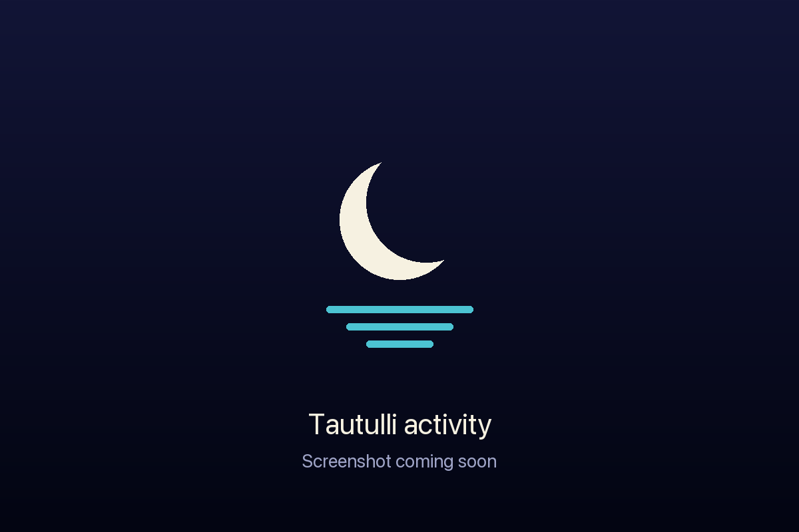
- Activity: each stream's poster, user and player, progress, Direct Play / Direct Stream / Transcode (4K → 720p), quality, bandwidth and LAN/WAN, refreshed every 5 seconds. Swipe left: Stop the stream, with an optional message to the viewer (needs Plex Pass).
- Users: everyone on your server with avatar, last seen, last played, plays and watch time. Tap a user for their watch time over the last day, week, month and all time, the players they use, and their recent history.
- History: the last 50 plays, with watch time and watched status. The search field searches your whole history by title or user.
- Stats: most watched and most popular TV and movies, recently watched, most active users, platforms and libraries, and most concurrent streams. The Period menu covers the last 7, 30 or 90 days, or the last year.
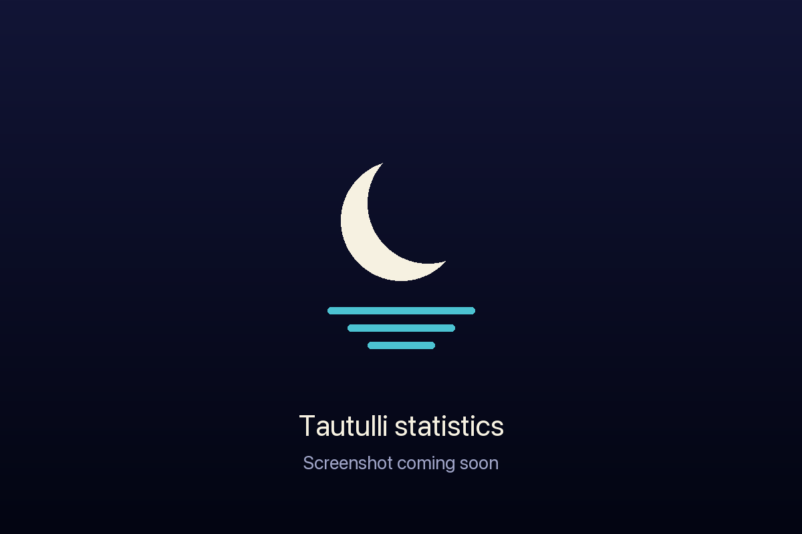
Indexer search
Add your Newznab indexers, such as NZBGeek or nzb.life, in Settings → Add Indexer with their API URL (e.g. https://api.nzbgeek.info) and API key. Then use Search in the sidebar.
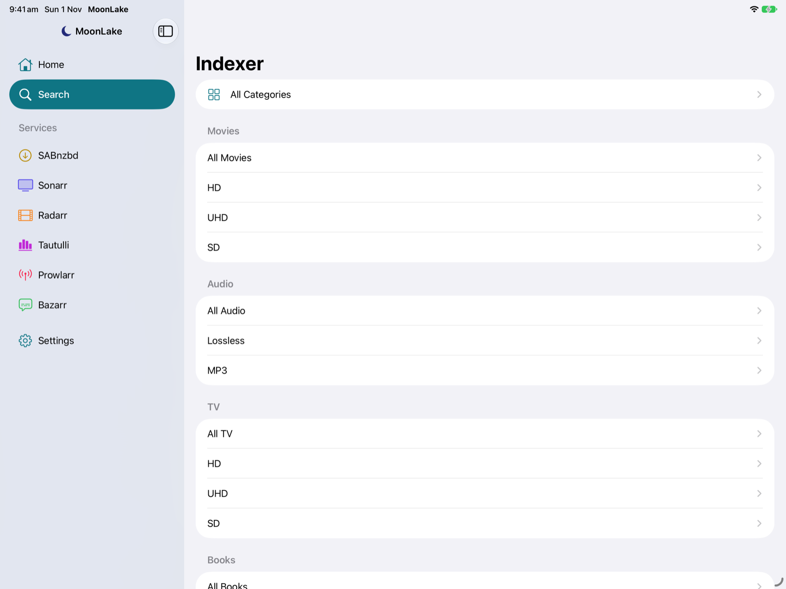
- Browse: tap an indexer to see its categories (All, then Movies, TV, Audio and their subcategories such as HD and UHD). Tap one to see its newest releases; the search field then searches inside it.
- Search All Indexers: search every indexer at once, with Category and Indexers menus.
- Results show size, age, grabs and category, and which indexer they came from. Sort by Newest, Largest or Most Grabbed; Load More fetches the next page.
- Tap, or swipe right, to Send to SABnzbd: choose the SABnzbd instance, one of its categories and a priority. SABnzbd fetches the NZB straight from the indexer.
- Touch and hold: Open on Indexer opens the release's page.
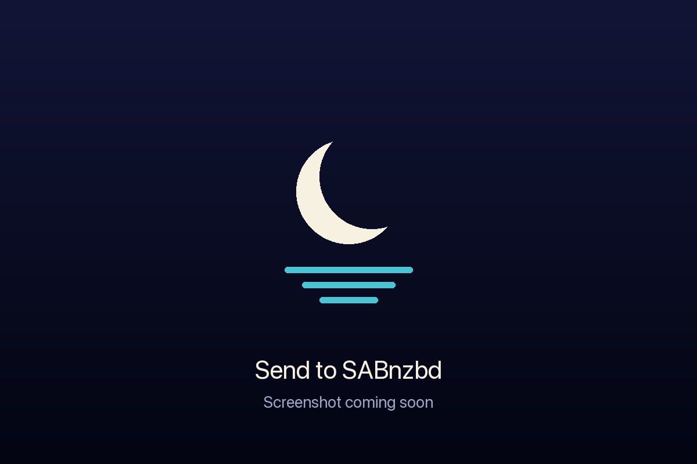
Indexers limit how many searches and grabs you can make a day. MoonLake only searches when you ask it to.
Prowlarr
Add Prowlarr in Settings → Add Prowlarr with its address (port 9696) and API key from Settings → General → Security.
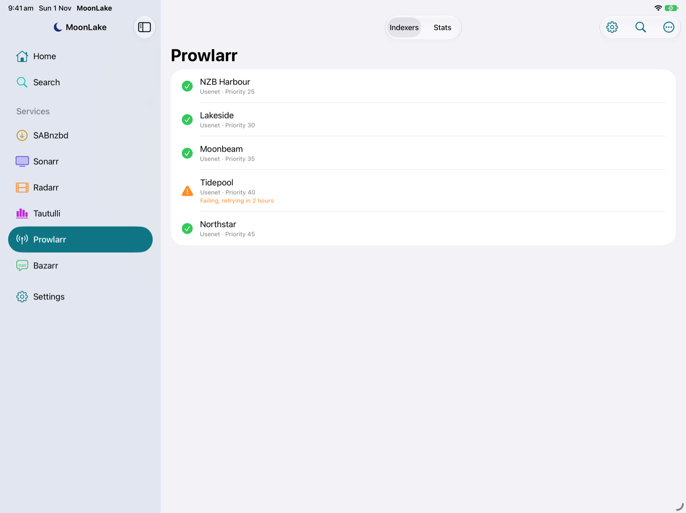
- Indexers: every indexer with its protocol and priority. Indexers Prowlarr has paused after failures say when they'll be retried. Swipe right to Test; swipe left to Enable or Disable.
- Stats: queries, grabs, failures and average response time for each indexer.
- Search (magnifying glass): search every Prowlarr indexer at once and pick a release, just like interactive search. Grabs go to the download client set up in Prowlarr.
- ⋯ menu: Test All Indexers.
Bazarr
Add Bazarr in Settings → Add Bazarr with its address (port 6767) and API key from Settings → General → Security.
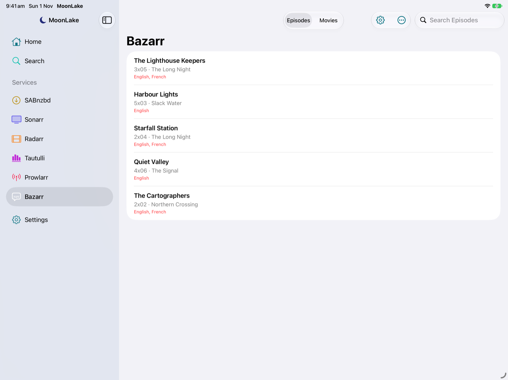
- Episodes and Movies list everything still missing subtitles, with the missing languages in red. The search field filters by title.
- Swipe right, or touch and hold, to search for one missing language, e.g. "Search English".
- ⋯ menu: Search All Missing episodes or movies. Bazarr works through them in the background.
iPhone Duo, iPad & Mac
- Unfolded (and on iPad and Mac): the sidebar and the content side by side. Folded: one screen at a time.
- Book posture: hold the Duo half open and sideways, and the sidebar fills the left page with the content on the right, so nothing sits on the crease.
- Folding and unfolding keep your place: the series you're on, the tab you're in.
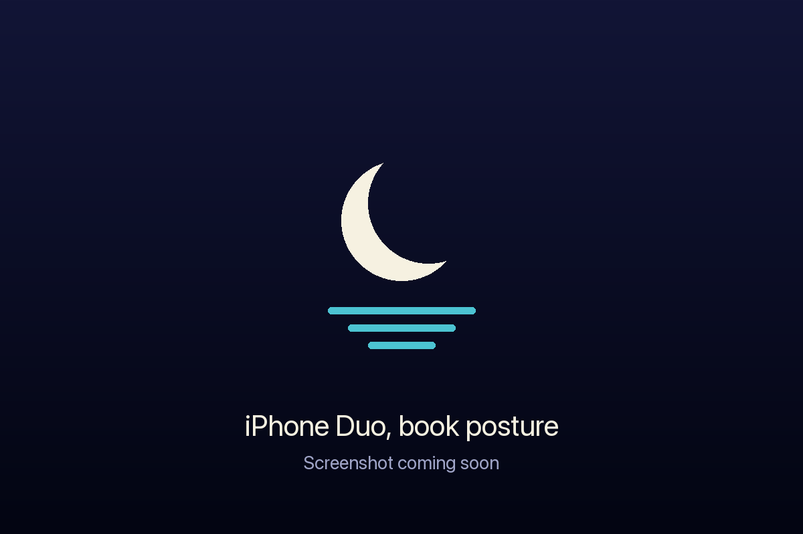
Widget & Apple Watch
With MoonLake Pro, what's on today follows you off the app.
- Releasing Today widget: today's episodes and movie releases from all your Sonarr and Radarr instances, with air times and a tick for what's already downloaded. Small, medium and large on the Home Screen, iPad and Mac, plus Lock Screen sizes on iPhone. It moves on to each new day by itself; open MoonLake now and then to pick up changes.
- Apple Watch: scroll with the Digital Crown between Upcoming (the week's releases by day), Downloads (SABnzbd's speed and queue, with Pause and Resume) and Streams (who's watching on Plex, via Tautulli).
- Complications: today's count, the next releases, or a one-line summary on your watch face.
- Downloads on the Lock Screen (Pro+, from MoonLake 1.1): while SABnzbd is downloading, a Live Activity shows the current download, progress, speed and time left on the Lock Screen and in the Dynamic Island.
- The Watch asks your iPhone for live status, so your server addresses and API keys never leave your iPhone.
Demo Mode
Want to look around before connecting anything? Tap Try Demo Mode on Home, or turn on Settings → Demo Mode. MoonLake fills every screen with sample servers: made-up shows, movies, downloads and streams, with artwork drawn from their titles. Everything works, from searches to pausing downloads, but nothing leaves your device and your own settings aren't touched. Tap Exit at the bottom of the sidebar to go back.
The screenshots on this page were taken in Demo Mode.
MoonLake Pro
MoonLake is free with one instance of each service. MoonLake Pro is a one-time purchase (no subscription) that adds:
- Multiple instances of any service, e.g. Sonarr and Sonarr 4K.
- The Releasing Today widget.
- The Apple Watch app and complications.
Buy it in Settings → MoonLake Pro. It's shared with your family through Family Sharing, and Restore Purchases brings it back on a new device.
From MoonLake 1.1, MoonLake Pro+ adds notifications and downloads on the Lock Screen.
MoonLake Pro+
MoonLake Pro+ is available from MoonLake 1.1.
MoonLake Pro+ is a monthly subscription (A$1.99 a month, with a one-week free trial). It includes everything in Pro and adds two things on iPhone and iPad: notifications from your servers, and your downloads on the Lock Screen and in the Dynamic Island. Subscribe in Settings → MoonLake Pro, and cancel any time in your Apple Account's subscriptions.
Both work even when MoonLake is closed, through MoonLake's notification relay: your servers tell the relay when something happens, and the relay passes it on to your device through Apple's push service. The relay never has your server addresses, API keys or passwords; see the privacy policy.
Notifications
- Open Settings → Notifications and turn on Notifications.
- Under Servers, tap Connect next to each Sonarr, Radarr, Prowlarr and SABnzbd. MoonLake adds a webhook to that server for you (in Sonarr, Radarr and Prowlarr under Settings → Connect; in SABnzbd under Config → Notifications). There's nothing to type in.
- Tap Send Test Notification to check it works.
Choose what you hear about under Notify Me About:
| Server | Events |
|---|---|
| Sonarr, Radarr | Grabbed · Imported or Upgraded · Import Needs Attention (a download finished but couldn't be imported, with the reason) · Health Issues |
| SABnzbd | Download Finished · Download Failed · All Downloads Finished · Disk Full |
| Prowlarr | Health Issues |
Under Per Server, give one server its own choices, for example only failures from Sonarr 4K. The rest follow the app-wide switches.
Each iPhone and iPad connects for itself and gets its own webhook, so connect on every device you want notifications on. If a webhook address has ever been shared by mistake, New Webhook Addresses retires the old ones and updates your servers.
Downloads on the Lock Screen
While SABnzbd is downloading, a Live Activity shows the current download, progress, speed and time left on the Lock Screen and in the Dynamic Island. Tap it to open SABnzbd.
- It starts by itself when a download is added, as long as SABnzbd is connected in Settings → Notifications, even with MoonLake closed.
- It ends with Done · All downloads finished when the queue completes, or Stopped · Queue empty if you delete what was downloading. A finished activity stays for five minutes.
- Progress: on its own, MoonLake updates progress when it's open and now and then in the background, and counts down in between. For progress that keeps up all the time, add the live progress helper.
- Turn it off in Settings → Notifications → Downloads on Lock Screen.
Live progress helper
The helper is optional. Without it, your Lock Screen download starts and ends by itself but only shows progress when MoonLake has had a chance to check. With it, progress, speed and time left stay up to date with MoonLake closed, and a deleted download clears within about 30 seconds.
Why a helper?
SABnzbd only tells the outside world about events, such as "download added" or "queue finished", not its progress in between. And iOS doesn't let apps check a server every few seconds in the background. So something on your own network has to look at SABnzbd's queue and pass the progress on. That's the helper.
What it does
- Every 30 seconds it asks SABnzbd for its queue, over your home network.
- If something is queued, it sends the queue (names, sizes, speed and time left) to MoonLake's relay, which updates the Live Activity on your devices.
- When the queue empties, it sends one last update, so the relay can end the activity as finished or as emptied.
- While SABnzbd is idle, it sends nothing at all.
It's a short script you can read: a loop of curl calls, with nothing to install. Your API key stays in the helper, at home; the relay only ever sees the queue. The helper needs to reach the internet, but nothing needs to reach it: no ports to open.
What you need
Something that's always on and can reach SABnzbd: a Mac, a Linux computer or Raspberry Pi, a Docker host, a Synology NAS, or a Windows PC. The computer that runs SABnzbd is usually the easiest choice.
Setting it up
- On your iPhone or iPad, open Settings → Notifications. Under Live Download Progress, tap Set Up next to your SABnzbd.
- Leave New Helper selected and choose what it Runs On.
- MoonLake shows everything that system needs, already filled in with your SABnzbd's address and the private address for your device. Tap Copy on each item and paste it on the computer (Universal Clipboard pastes straight onto a Mac).
- Follow the steps shown under Set It Up.
- Add a download in SABnzbd and lock your phone: the Live Activity should keep up within a minute or two.
| Runs on | What MoonLake gives you | How it keeps running |
|---|---|---|
| Mac | The helper, and a background item | Starts at login and restarts if it stops (launchd). A few lines in Terminal set it up. |
| Linux | The helper, and a service file | A systemd user service: starts at boot and restarts if it stops. |
| Docker | The helper, and a compose file | Runs in the small official curlimages/curl image, restarted by Docker. |
| Synology | The helper, and a compose file | A Container Manager project (DSM 7.2 or later), or a boot-up task in Task Scheduler. |
| Windows | A PowerShell version of the helper | A scheduled task that starts at sign-in, hidden. |
The helper uses your SABnzbd's Home address. If that's localhost and the helper runs in Docker, change the SAB= line to the server's network address, such as http://192.168.1.10:8080; MoonLake warns you when this applies.
More than one iPhone or iPad
One helper can update all your devices. You don't need a second helper, and nothing changes on the one you have.
- On the device you set the helper up from, open Settings → Notifications → Live Download Progress → Set Up and tap Share With Another Device. It shows a code such as
86TE-PGVV, which works once, for 10 minutes. - On the other device, open the same screen, choose Already Running, enter the code and tap Link.
The first device then lists the other under Also Updates. Stop Sharing on the first device, or Stop Using It on the other, undoes it.
Updating or removing it
- After New Webhook Addresses, or if your SABnzbd's address or API key changes, open Set Up again, copy the new helper over the old one and restart it. The steps in MoonLake include how.
- To remove it, follow the "Stopping it" step for your system in MoonLake, then delete the files.
If progress doesn't update
- Check the helper is running on the computer, and that the computer can open your SABnzbd's address in a browser.
- Check Downloads on Lock Screen is on, and that Live Activities are allowed for MoonLake in iOS Settings.
- On a locked device, iOS may hold some updates back for a minute or two to save battery. That's normal.
- On a second device, make sure it's linked under Already Running.
Gesture cheat sheet
| Where | Swipe right | Swipe left | Touch and hold |
|---|---|---|---|
| Home | Interactive · Automatic search | – | Same searches |
| SABnzbd queue | Pause · Resume | Delete | Move to Top/Bottom · Priority · Drag to reorder |
| SABnzbd history | – | Remove | Remove |
| Sonarr library | Automatic search | Monitor · Unmonitor | Both |
| Sonarr episodes, calendar | Interactive · Automatic search | Monitor · Unmonitor (episodes) | All of these |
| Radarr library, calendar | Interactive · Automatic search | Monitor · Unmonitor | All of these |
| Sonarr/Radarr queue | – | Remove · Remove and Blocklist | Remove |
| Tautulli activity | – | Stop stream | Stop stream |
| Prowlarr indexers | Test | Enable · Disable | Both |
| Bazarr wanted | Search a missing language | – | Same searches |
| Indexer results | Send to SABnzbd | – | Send · Open on Indexer |
| Settings instances | – | Delete instance | Delete instance |
A full swipe runs the first action, for example opening interactive search.
Questions
Where do I get MoonLake?
MoonLake is on the App Store for iPhone, iPad and Mac (one app for all three), for iOS 27 and macOS 27 or later. The Apple Watch app comes with the iPhone app.
It can't connect
Run Test Connection in the instance's settings: it says what's wrong for each address. At home, check that MoonLake has Local Network access in Settings → Privacy & Security. Away, check that your reverse proxy or port forward reaches the service.
Privacy
MoonLake has no account and no analytics. It connects only to the servers and indexers you add, plus, if you use Pro+ notifications or downloads on the Lock Screen, MoonLake's notification relay, which holds your device's push tokens and nothing else. It keeps your servers' addresses on your device and their keys in the Keychain. Posters and images come from your own Sonarr, Radarr and Tautulli; user avatars come from Plex. MoonLake collects no data at all. Read the full privacy policy.
© 2026 GE Project Solutions. Inspired by LunaSea by Jagandeep Brar. MoonLake isn't affiliated with SABnzbd, Sonarr, Radarr, Tautulli, Prowlarr, Bazarr, Plex or any indexer. Contact: moonlakeapp@geps.au.